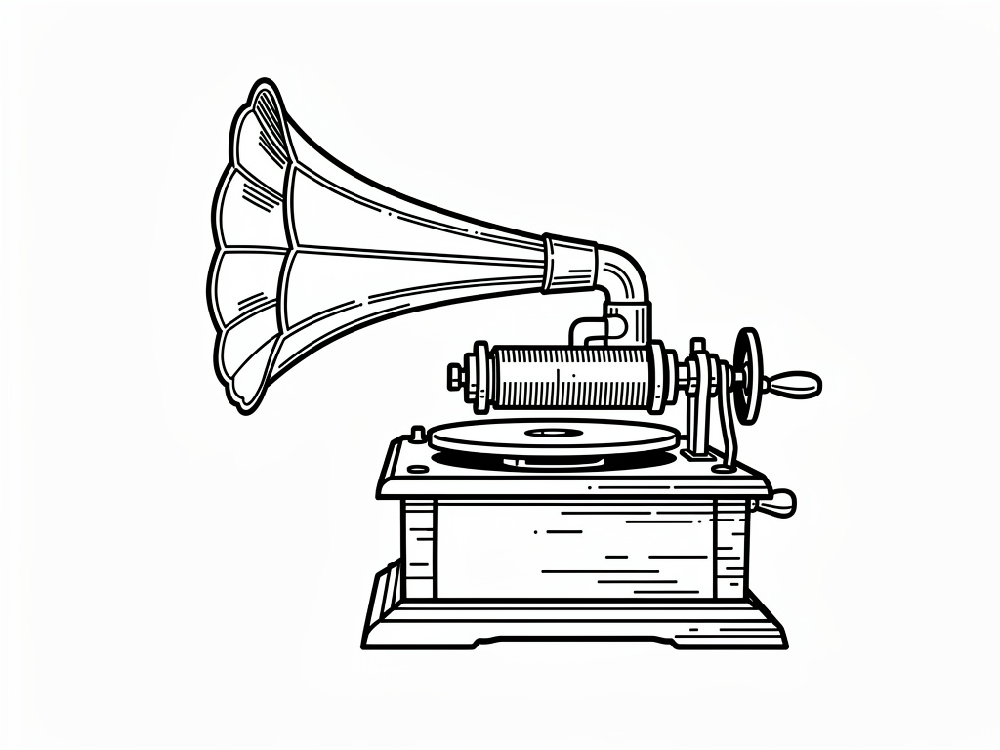

audiobox is a go module that for managing audio metadata in an SQLite3 database. It uses “https://github.com/dhowden/tag” module to extract metadata that may be found in the audio file itself.
This software is for Lourdes.
version: 0.0.2
status: concept
released: 2026-05-02
Web UI will initialize on first run
TUI display bugs fixed